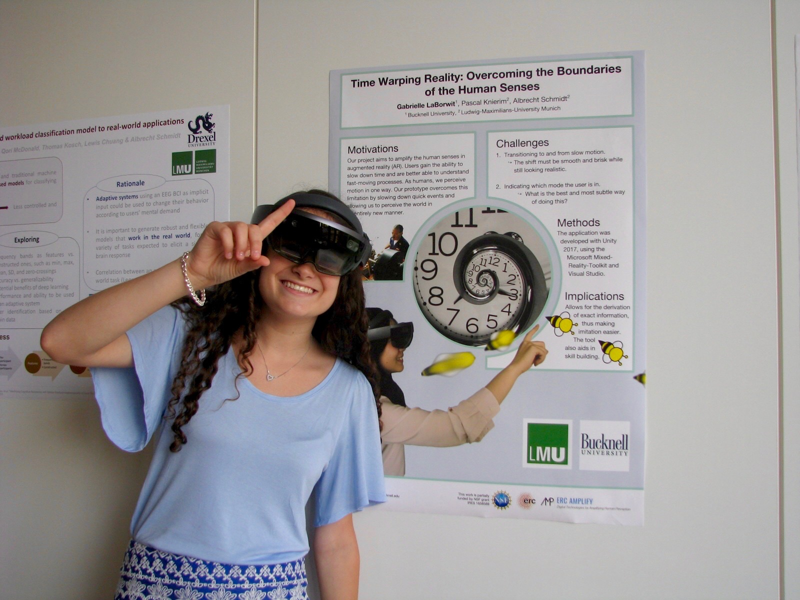

Time Warp in AR
Date
Jun 2018 - Jul 2018
Where
Munich, Germany
Technologies
Microsoft Hololens, Unity, C#, Visual Studio
The Team
My role: Design EngineerDesigned interface, Software EngineerProgrammed application, UX ResearcherConducted user experience research
Pascal Knierim: Project SupervisorMentor, provided guidance on software development and user test design, current graduate student
Dr. Albrecht Schmidt: Lab SupervisorSupervises HCUM Lab @ LMU Munich as well as lab's projects
Augmented reality (AR) is a relatively new technology that will likely be commonplace in the upcoming years. My goal for this project was to utilize AR technology to enhance the human senses by creating a program that would slow down time.
Motivation
The summer of 2018 I spent two months conducting research in Munich, Germany through the International Research Experiences for Students (IRES) program funded by the National Science Foundation. Going into the project, my graduate mentor, Pascal Knierim, and I were motivated to build something that would heighten the human senses in a way that was not able to be done with traditional technologies. We decided to amplify sight by building an augmented reality program where users could tap their fingers and watch reality go into slow motion.
Use Cases
Humans only perceive motion in one way. Our slow-motion viewing prototype overcomes this limitation by allowing humans to perceive motion in an entirely new manner. In a factory, employees can use the technology to better diagnose machine malfunctions. Dancers can use the technology to expedite the process of learning new choreography. In summary, our prototype allows for the derivation of exact information from high-speed situations, making problem-solving, imitation, and skill-building easier.
The Design Process
Designing Slow Motion
The first step in producing the application was to create the effect of slow motion. I used the Hololens’ built-in camera to stream live video footage into an overlay on the Hololens display (Figure 1).
Transition Effects
After several attempts and feedback from my mentor and lab peers, a natural slow-motion effect was achieved. I was then faced with the challenge of choosing appropriate transition effects when toggling between slow motion and live video, deemed “reality mode”. The shift from reality to slow motion was simple: it looked most natural to immediately slow footage down with no transition. The harder problem was designing the shift from slow motion to reality; this transition had to be subtle but clear. To solve this, I observed movies and videos that involve transitions from slow motion to reality. It seemed that the most realistic choice would be to play the remaining slow-motion footage at double the normal speed until it caught up to reality (Figure 3).
Indicators
Lastly, I had to find a way to indicate whether a user was in slow motion or reality mode. Sticking with the theme of time warp, I designed a small clock in the corner with a second hand that ticks at a normal speed when in reality mode, a noticeably slow speed when in slow motion, and fast when transitioning from slow motion to reality mode.User Study
Upon completing the prototype (Figure 4), I directed a user study in which participants utilized our program to perform certain tasks. Then, they took a survey about their experience with the program, its features, and use cases that they saw fit for the technology.
Note: clock and other indicator signals not displayed in video
Poster Presentation
I was able to present a poster and give a small demonstration of the application at Multimodal Interaction in Augmented and Virtual Reality (WeimARVR) in Weimar, Germany towards the end of that July (Figure 5).